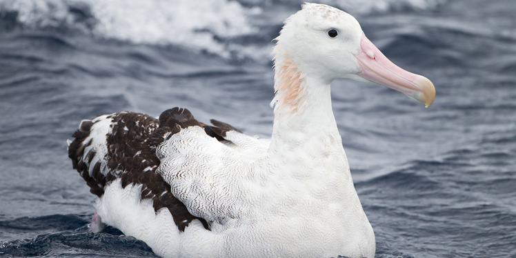

Wandering Albatross
AKA: Snowy albatross, White-winged albatross or Goonie. Scientific Name: Diomedea exulans Family: Diomedeidae Species: D. exulans Speed: 127 – 140 km/h Length: 107 – 135 cm Mass: 5.9 – 12.7 kg Wing Span: 251 – 350 cm Life Span:40 – 50 years Location: Southern Ocean Diet: Fish and other aquatic animals.
Appearance:
Longer, hook-tipped bill. The adult has a white body with white and black wings. The wings of the male are whiter than female with black tips and trailing edges. The large bill and feet are pink.
Facts:
- It has the largest wingspan of any living bird.
- It is night feeder.
- It is known to practice a flying technique (dynamic soaring).
- It is known to cover thousands of miles in a short amount of time